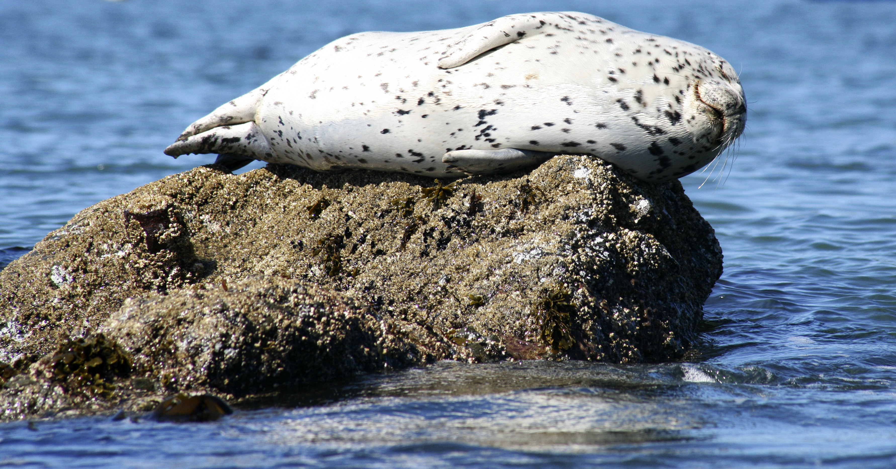
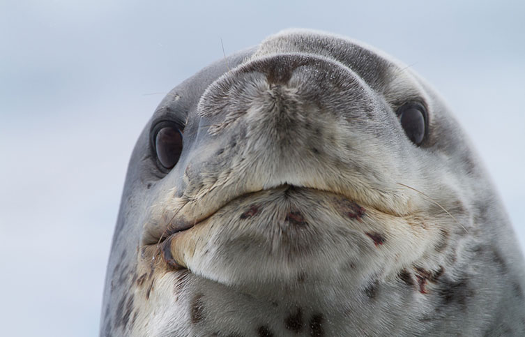
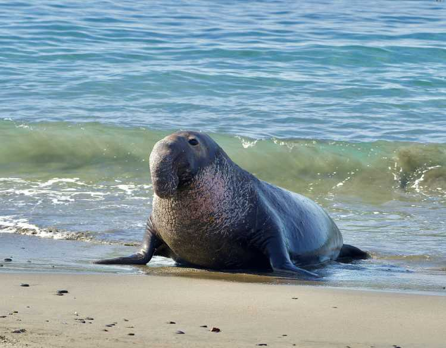
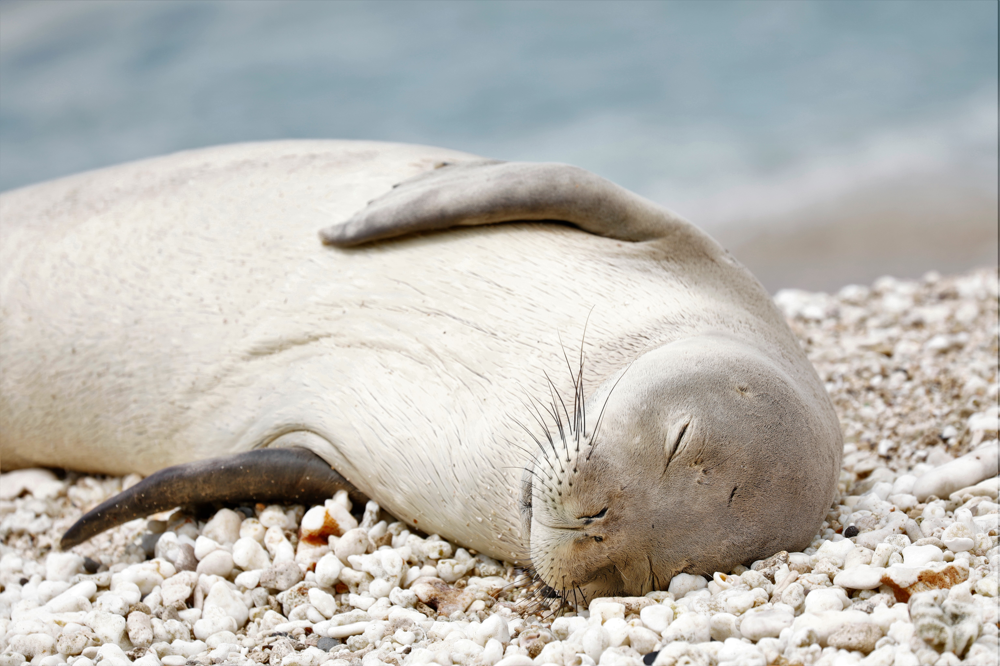

What Are Seals?

A seal resting on a rock
Seals are marine mammals that live in the ocean but also spend time on land. They belong to a group called Pinnipedia which means "fin-footed" in Latin. There are more than 33 different species of seals found all around the world!
Seals are very good swimmers and can hold their breath for a really long time. Some seals can dive very deep in the ocean to find food. They mostly eat fish, squid, and other sea animals.
You can find seals on almost every continent on Earth. They live in cold places like the Arctic and Antarctica but some species also live in warmer places too.
Quick Facts About Seals:
Did You Know?
The Weddell Seal can hold its breath for over 80 minutes and dive more than 600 meters deep! That is really impressive for an air-breathing mammal.

Species
There are 33+ species of seals in the world. Click below to learn about them!
View Species

Habitat
Seals live all over the world from the arctic to tropical beaches!
Explore Habitats

Conservation
Some seals are endangered. Learn about how we can protect them.
Learn More
Cool Seal Adaptations
Seals have a lot of really cool features that help them survive in the ocean. Here are some of the most interesting ones:
- They have a thick layer of blubber (fat) that keeps them warm in cold water
- Their whiskers can detect vibrations in the water to find fish even in the dark
- They can slow down their heart rate when diving to save oxygen
- Some seals can sleep while floating in the ocean!
- Their back flippers work like a fish tail to propel them through the water
Want to see a video? Click here to jump to the video!
Seals By The Numbers
| Fact | Number |
|---|---|
| Total seal species in the world | 33+ |
| Max dive depth (Weddell Seal) | 600+ meters |
| Max breath hold time | 80+ minutes |
| How much a big elephant seal can weigh | Up to 2,300 kg |
| Continents where seals are found | All 7 continents |
Watch This Cool Seal Video!
Here is a documentary about seals in the artic: